Explore this chapter with hands-on visualizations: K-Means Simulator, DBSCAN Explorer, PCA Step-by-Step, Anomaly Detection | t-SNE / UMAP Playground
Supervised learning needs labels. Unsupervised learning finds structure in raw data without them. This chapter covers the three main branches: clustering (grouping similar points), dimensionality reduction (compressing representations), and anomaly detection (finding the unusual).
In practice, anomaly detection often grows into its own topic because it touches unsupervised learning, monitoring, fraud, security, and quality control. So this chapter keeps anomaly detection as a short orientation while going deeper on clustering and representation learning.
What you will learn:
| Section | Topic |
|---|---|
| 8.1 | Clustering: K-Means, DBSCAN, hierarchical, GMM |
| 8.2 | Dimensionality reduction: PCA, t-SNE, UMAP |
| 8.3 | Anomaly detection: brief orientation and how it connects to unsupervised learning |
| 8.4 | Autoencoders and representation learning |
| 8.5 | Choosing the right method |
Prerequisites: Linear algebra (Chapter 2), model evaluation concepts (Chapter 7).
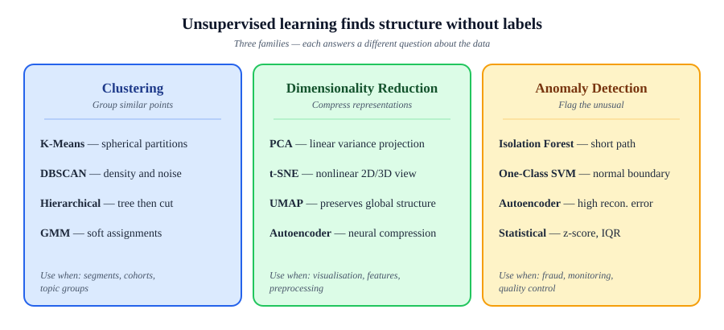
Key: Unsupervised learning is used for exploration, compression, preprocessing, and detecting what you didn’t know to look for.
You have data points with no labels. You want to discover which points are similar and should be grouped together.
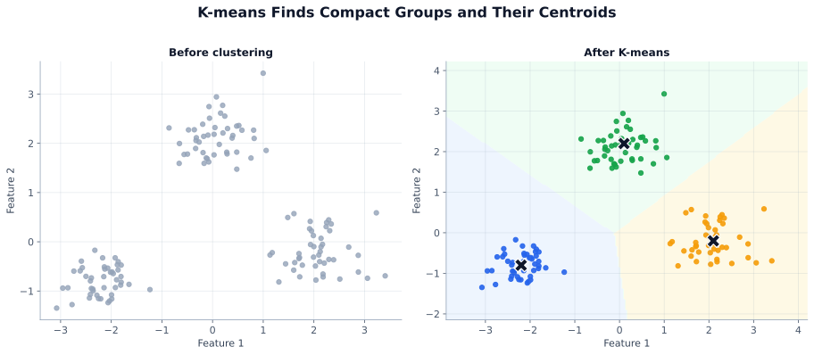
The default clustering baseline. Fast, simple, works well when clusters are roughly spherical and similar-sized.
Algorithm: 1. Pick k initial centroids (use
k-means++ seeding: init='k-means++') 2. Assign each point
to nearest centroid 3. Recompute each centroid as mean of assigned
points 4. Repeat 2–3 until assignments stop changing
The objective is to minimize total within-cluster sum of squared distances (inertia):
\[ J = \sum_{k=1}^{K} \sum_{x_i \in C_k} \|x_i - \mu_k\|^2 \]
Where: \(J\) = inertia (within-cluster sum of squared distances), \(K\) = number of clusters, \(C_k\) = set of points in cluster \(k\), \(\mu_k\) = centroid of cluster \(k\).
from sklearn.cluster import KMeans
import numpy as np
kmeans = KMeans(n_clusters=4, init='k-means++', n_init=10, random_state=42)
labels = kmeans.fit_predict(X)
print(f"Inertia: {kmeans.inertia_:.1f}") # within-cluster SSQ
print(f"Centers: {kmeans.cluster_centers_.shape}") # (k, n_features)Choosing k — the Elbow Method:
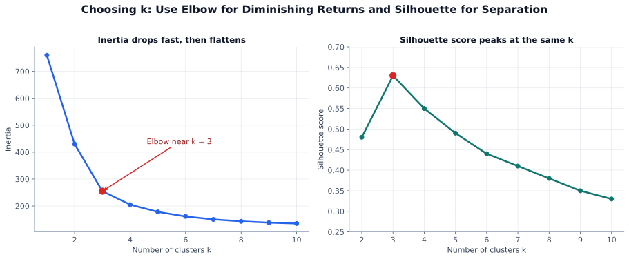
inertias = []
for k in range(1, 12):
km = KMeans(n_clusters=k, n_init=10, random_state=42)
km.fit(X)
inertias.append(km.inertia_)
# Plot inertias vs k, look for the elbowSilhouette Score — internal evaluation without ground truth labels:
\[ s(i) = \frac{b(i) - a(i)}{\max(a(i), b(i))} \]
from sklearn.metrics import silhouette_score
# Try multiple k values, pick highest silhouette
best_k, best_score = 2, -1
for k in range(2, 12):
labels = KMeans(n_clusters=k, n_init=10, random_state=42).fit_predict(X)
score = silhouette_score(X, labels)
if score > best_score:
best_k, best_score = k, score
print(f"Best k={best_k}, silhouette={best_score:.3f}")K-Means limitations: assumes spherical similar-sized clusters; sensitive to outliers; must specify k; can hit local optima (run with n_init=10+).
Groups densely packed points, labels sparse points as noise. Does not require specifying k.
Two parameters: eps (neighbourhood radius) and
min_samples (minimum points to form a core point).
Three point types:
| Point Type | Definition |
|---|---|
| Core | Has ≥ min_samples neighbours within eps radius. Forms the backbone of clusters. |
| Border | Within eps of a core point, but does not itself have enough neighbours to be core. Belongs to a cluster but sits on its edge. |
| Noise | Not within eps of any core point — gets label −1. These are the outliers DBSCAN identifies. |
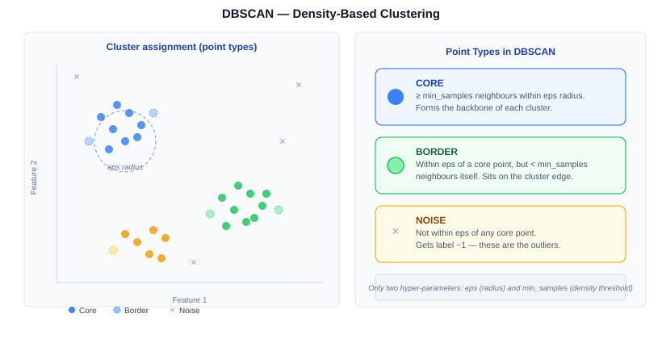
from sklearn.cluster import DBSCAN
db = DBSCAN(eps=0.5, min_samples=5)
labels = db.fit_predict(X)
n_clusters = len(set(labels)) - (1 if -1 in labels else 0)
n_noise = (labels == -1).sum()
print(f"Clusters: {n_clusters}, Noise: {n_noise}")Choosing eps: plot sorted k-nearest-neighbour distances and find the “knee.”
from sklearn.neighbors import NearestNeighbors
nbrs = NearestNeighbors(n_neighbors=5).fit(X)
distances, _ = nbrs.kneighbors(X)
knee_dist = np.sort(distances[:, -1])
# Plot knee_dist — the knee value is your epsDBSCAN strengths: arbitrary cluster shapes, built-in outlier detection, no k required. DBSCAN weaknesses: eps and min_samples are sensitive; struggles when cluster densities vary.
Builds a tree (dendrogram) of nested clusters. Cut the tree at any height to get any number of clusters — no need to commit to k upfront.
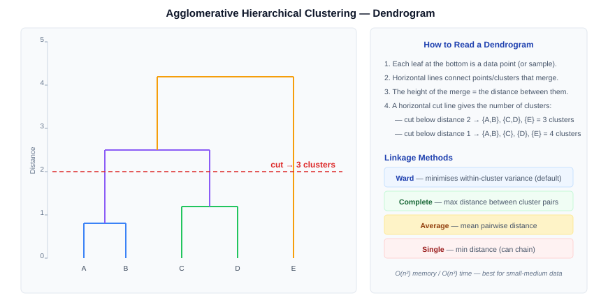
from scipy.cluster.hierarchy import dendrogram, linkage
import matplotlib.pyplot as plt
from sklearn.cluster import AgglomerativeClustering
# View dendrogram to choose cut point
Z = linkage(X, method='ward')
plt.figure(figsize=(12, 4))
dendrogram(Z, truncate_mode='level', p=5)
plt.title('Dendrogram — draw a horizontal line to choose k')
plt.show()
# Then cluster at chosen k
model = AgglomerativeClustering(n_clusters=4, linkage='ward')
labels = model.fit_predict(X)Linkage methods: Ward (minimize within-cluster variance) is the default recommendation. Complete = max distance; Average = mean distance; Single = min distance (prone to chaining).
GMM is probabilistic clustering — each cluster is a Gaussian. Points get soft assignments: a probability of belonging to each cluster.
\[ p(x) = \sum_{k=1}^{K} \pi_k \cdot \mathcal{N}(x \mid \mu_k, \Sigma_k) \]
Where: \(K\) = number of Gaussian components, \(\pi_k\) = mixing weight (\(\sum \pi_k = 1\)), \(\mu_k\) = component mean, \(\Sigma_k\) = component covariance matrix.
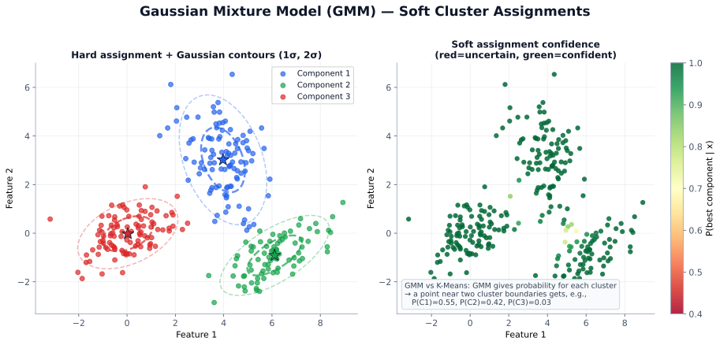
| Property | K-Means | GMM |
|---|---|---|
| Assignment | Hard boundaries | Soft probabilities |
| Cluster shape | Spherical only | Elliptical shapes OK |
from sklearn.mixture import GaussianMixture
gmm = GaussianMixture(n_components=3, covariance_type='full', random_state=42)
gmm.fit(X)
labels = gmm.predict(X) # hard assignments
probs = gmm.predict_proba(X) # shape (n, k) — soft assignments
# Choose n_components using BIC (lower = better balance of fit vs complexity)
bics = [GaussianMixture(n, random_state=42).fit(X).bic(X) for n in range(1, 10)]
best_n = np.argmin(bics) + 1GMM uses EM (Expectation-Maximisation) internally. E-step: assign points to clusters probabilistically. M-step: update Gaussian parameters to maximize likelihood.
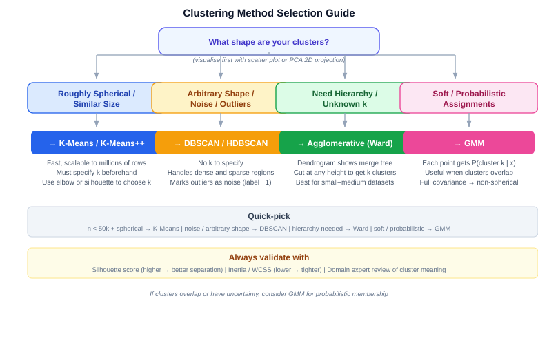
| Method | Best when | Watch out for |
|---|---|---|
| K-Means | You need a fast baseline and clusters are roughly round and similar in size | Fails on non-spherical clusters and outliers |
| DBSCAN | You expect irregular cluster shapes and want noise detection built in | Sensitive to eps; struggles with varying densities |
| Hierarchical | You want nested structure, a dendrogram, or flexible cut levels | Can be expensive on large datasets |
| GMM | You want soft membership or elliptical clusters with overlap | More parameters to tune; can overfit small datasets |
| WITH Ground Truth Labels | WITHOUT Ground Truth |
|---|---|
| Adjusted Rand Index (ARI) — chance-corrected agreement between true and predicted labels. Range: −1 to +1, higher is better. | Silhouette score — cohesion vs separation per point. Range: −1 to +1, higher is better. |
| Normalized Mutual Info (NMI) — information-theoretic overlap. Range: 0 to 1, higher is better. | Davies-Bouldin index — ratio of within-cluster to between-cluster distances. Lower is better. |
| Fowlkes-Mallows score — geometric mean of precision and recall of cluster pairs. Range: 0 to 1, higher is better. | Calinski-Harabasz index — ratio of between-cluster to within-cluster variance. Higher is better, but favours convex clusters. |
from sklearn.metrics import (
adjusted_rand_score, silhouette_score, davies_bouldin_score
)
ari = adjusted_rand_score(true_labels, pred_labels) # needs ground truth
sil = silhouette_score(X, pred_labels) # no ground truth needed
db = davies_bouldin_score(X, pred_labels) # lower is betterHigh-dimensional data has three problems: the curse of dimensionality (distances become meaningless), visualization is impossible, and models overfit.
| Method | Type | Use for |
|---|---|---|
| PCA | Linear, fast | Preprocessing and compression |
| t-SNE | Nonlinear, slow | ONLY visualization |
| UMAP | Nonlinear, faster | Viz + some global structure preserved |
If Chapter 4.6 introduced these tools as preprocessing choices, this section reframes them from the unsupervised side: each method discovers a smaller representation of the same data, but the type of structure it preserves is different.
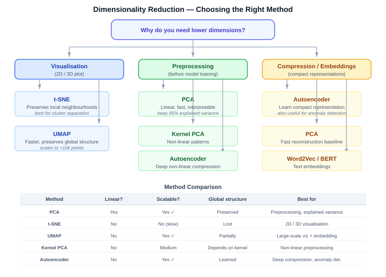
Finds the directions of maximum variance and projects your data onto them. Think of it as finding the best angle to cast a shadow of your data so that points stay as spread-apart as possible.
The key insight: PCA finds these best shadow directions automatically, using eigenvectors of the covariance matrix. Each eigenvector defines a principal component direction; its eigenvalue tells you how much variance that direction captures.
Let’s walk through PCA end-to-end on a tiny dataset so every number is traceable. We have 5 persons measured on 2 features: Height (cm) and Weight (kg).
Step 1 — Raw data
What: Collect your original measurements.
Why: This is your starting point — PCA will find a compact representation of this table.
| Person | Height (cm) | Weight (kg) |
|---|---|---|
| A | 170 | 65 |
| B | 175 | 70 |
| C | 180 | 75 |
| D | 185 | 80 |
| E | 190 | 85 |
Step 2 — Center the data
What: Subtract each column’s mean so the data is centred at the origin (mean height μh=180, mean weight μw=75).
Why: PCA looks for directions of maximum variance. If the data isn’t centred, the mean location dominates and the variance directions are misleading.
This step makes the data “about the spread,” not about the absolute position.
| Person | Height−180 | Weight−75 |
|---|---|---|
| A | −10 | −10 |
| B | −5 | −5 |
| C | 0 | 0 |
| D | +5 | +5 |
| E | +10 | +10 |
Step 3 — Compute the covariance matrix
What: Build a matrix Σ that measures how each pair of features varies together.
For our 2-feature example, Σ is a 2×2 matrix (one row and column per feature: Height, Weight).
The formula is Σ = XTX / (n−1), where X is the centred data from Step 2 (5 rows × 2 columns).
Why: The covariance matrix captures all the spread and correlation information.
PCA’s next step (eigendecomposition) only needs this matrix — not the raw rows.
Σ = [[62.5, 62.5],
[62.5, 62.5]]Reading this matrix: the diagonal (62.5, 62.5) gives the variance of Height and Weight respectively. The off-diagonals (62.5) give the covariance between them. Since all four values are equal, height and weight are perfectly correlated in this toy dataset — when one goes up by 5, so does the other.
Step 4 — Eigendecompose the covariance matrix
What: Find the eigenvectors (directions) and eigenvalues (importance) of Σ.
Each eigenvector points along a principal component; its eigenvalue tells you how much variance lies in that direction.
Why: This is the core of PCA — the eigenvectors are the new axes, and the eigenvalues let you rank them and decide how many to keep.
Step 5 — Project onto PC1
What: Multiply each centred data row by the chosen eigenvector(s) to get new coordinates (scores).
Here we keep only PC1, so each person gets one number: score = dot product of their centred [H, W] with v₁ = [0.707, 0.707].
Why: This is the actual dimensionality reduction. The 2D table becomes a 1D list of scores — yet those scores capture the maximum possible variance.
| Person | Centred [H, W] | PC1 Score |
|---|---|---|
| A | [−10, −10] | −14.14 |
| B | [−5, −5] | −7.07 |
| C | [0, 0] | 0.00 |
| D | [+5, +5] | +7.07 |
| E | [+10, +10] | +14.14 |
We reduced 2 features to 1 score while retaining 100% of the variance (λ₁/(λ₁+λ₂) = 125/125).
The steps formalised:
Key: Always scale before PCA. Unscaled features dominate for the wrong reason.
from sklearn.preprocessing import StandardScaler
from sklearn.decomposition import PCA
import matplotlib.pyplot as plt
scaler = StandardScaler()
X_scaled = scaler.fit_transform(X)
pca = PCA(n_components=0.95) # keep 95% of variance
X_pca = pca.fit_transform(X_scaled)
print(f"{X_scaled.shape} → {X_pca.shape}")
print(f"Components needed: {pca.n_components_}")
# Scree plot — cumulative explained variance
cumvar = np.cumsum(pca.explained_variance_ratio_)
plt.plot(range(1, len(cumvar)+1), cumvar, 'o-')
plt.axhline(0.95, ls='--', color='r', label='95% threshold')
plt.xlabel('Components'); plt.ylabel('Cumulative variance'); plt.legend()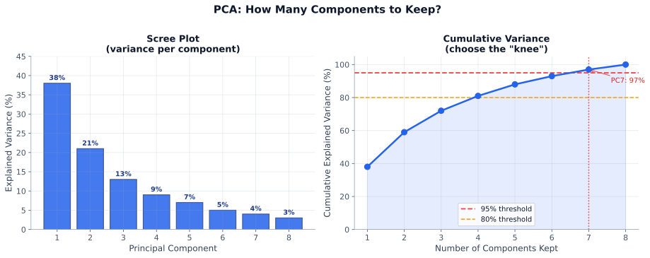
How to choose the number of components:
n_components=0.95 to keep components until 95% variance explained. Reliable default for preprocessing.When PCA falls short: PCA captures only linear structure. For nonlinear manifolds (rings, spirals), use UMAP or t-SNE for visualization and kernel PCA for nonlinear compression.
Preserves local neighbourhood structure. Use only for visualization — cannot transform new data.
from sklearn.manifold import TSNE
# Run PCA first for speed on large datasets
X_50 = PCA(n_components=50).fit_transform(X_scaled)
tsne = TSNE(n_components=2, perplexity=30, learning_rate='auto',
init='pca', random_state=42, n_jobs=-1)
X_2d = tsne.fit_transform(X_50)
plt.scatter(X_2d[:, 0], X_2d[:, 1], c=labels, cmap='tab10', s=5, alpha=0.7)
plt.title('t-SNE — 2D visualization')Perplexity (5–50): roughly how many neighbours to consider. Try several values.
Key: t-SNE is for exploration, not production. Cluster distances are meaningless. Run multiple times with different random seeds to verify stability.
Faster than t-SNE, better global structure, and can transform new data.
# pip install umap-learn
import umap
reducer = umap.UMAP(n_components=2, n_neighbors=15, min_dist=0.1, random_state=42)
X_umap = reducer.fit_transform(X_scaled)
# Transform new data (t-SNE cannot do this)
X_new_umap = reducer.transform(X_new_scaled)Parameters: n_neighbors (local vs global tradeoff),
min_dist (cluster tightness).
When to use what:
| Task | Tool |
|---|---|
| Preprocessing before ML model | PCA |
| Compress features (100→20) | PCA |
| Visualize clusters 2D/3D | UMAP (fast) or t-SNE (thorough) |
| Transform new data after dim reduction | PCA or UMAP |
| Find structure in embeddings | UMAP then cluster |
Anomaly detection (also called outlier detection) finds data points that deviate significantly from the expected pattern — without needing labeled examples of what an anomaly looks like. It is used in fraud detection, network intrusion detection, predictive maintenance, and quality control.
Core idea: assign an anomaly score to every point; flag points whose score exceeds a threshold. The score definition varies by method.
Practical progression: start with z-score or IQR (fast, univariate baselines), move to Isolation Forest or LOF for multivariate tabular data, and reach for autoencoders when the data is high-dimensional, sequential, or image-based.
The go-to method for tabular anomaly detection. Anomalies are isolated with fewer random splits.
from sklearn.ensemble import IsolationForest
iso = IsolationForest(
contamination=0.05, # expected fraction of anomalies
n_estimators=100,
random_state=42
)
iso.fit(X_train)
scores = iso.decision_function(X) # higher score = more normal
labels = iso.predict(X) # +1 = normal, -1 = anomaly
n_anom = (labels == -1).sum()
print(f"Anomalies: {n_anom} ({n_anom/len(labels):.1%})")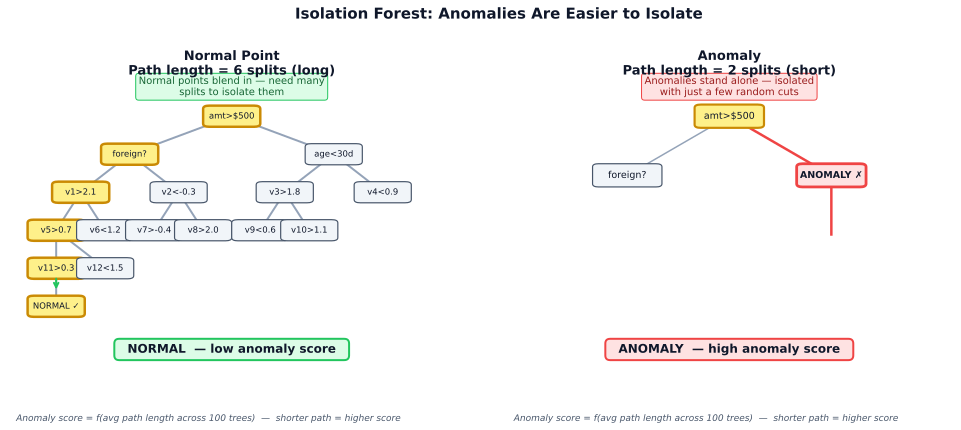
LOF compares the local density around a point to the density around its neighbours. If a point sits in a much sparser region than its neighbours, it receives a high LOF score and is flagged as an outlier. This makes LOF especially effective when clusters have varying density — a point that looks normal globally may be anomalous relative to its local neighbourhood.
from sklearn.neighbors import LocalOutlierFactor
lof = LocalOutlierFactor(n_neighbors=20, contamination=0.05)
labels = lof.fit_predict(X) # +1 normal, -1 anomaly
scores = -lof.negative_outlier_factor_ # higher = more anomalousOne-Class SVM fits a tight decision boundary (using an RBF kernel by default) around a training
set that contains only normal examples. At test time, any point falling outside this boundary is
classified as an anomaly. It works best when you have a clean, label-free training set of normal
behaviour and the anomaly rate is roughly known (controlled by the nu parameter,
which upper-bounds the fraction of outliers).
from sklearn.svm import OneClassSVM
oc_svm = OneClassSVM(kernel='rbf', nu=0.05)
oc_svm.fit(X_train_normal_only)
labels = oc_svm.predict(X_test) # +1 normal, -1 anomalyTrain on normal data. At test time, anomalies have high reconstruction error.
import torch, torch.nn as nn, torch.nn.functional as F
class AE(nn.Module):
def __init__(self, in_dim, z=16):
super().__init__()
self.enc = nn.Sequential(nn.Linear(in_dim,64),nn.ReLU(),nn.Linear(64,z))
self.dec = nn.Sequential(nn.Linear(z,64),nn.ReLU(),nn.Linear(64,in_dim))
def forward(self, x):
return self.dec(self.enc(x))
model = AE(X.shape[1])
# . train on normal data .
with torch.no_grad():
errors = F.mse_loss(model(X_t), X_t, reduction='none').mean(1)
threshold = errors.quantile(0.95)
anomalies = errors > threshold| Method | Best for | Speed | Tuning |
|---|---|---|---|
| Isolation Forest | General tabular, large data | Fast | contamination |
| LOF | Varying-density clusters | Moderate | n_neighbors |
| One-Class SVM | Small clean normal dataset | Slow | nu, gamma |
| Autoencoder | High-dim, images, sequences | Slow (training) | architecture |
| Z-score / IQR | Quick baseline, univariate | Very fast | threshold |
An autoencoder learns to compress data into a small latent representation and reconstruct the original. The bottleneck forces the network to learn the most essential structure.
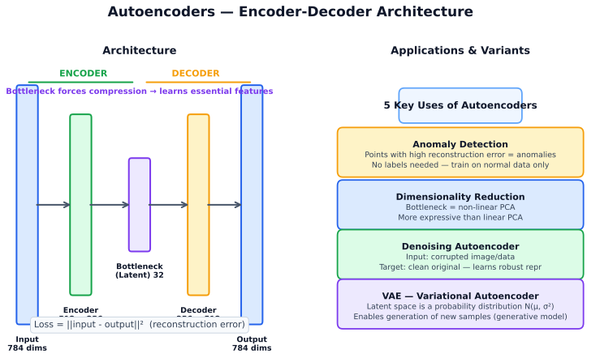
Uses: dimensionality reduction, anomaly detection, denoising, pretraining features.
Why the bottleneck matters: if the network could simply copy every input feature straight through, it would learn nothing useful. The narrow latent layer forces the model to keep only the structure that helps reconstruction.
The latent vector \(z\) is useful beyond reconstruction: you can cluster it, visualize it, feed it to a downstream model, or monitor it for drift over time.
Variational Autoencoder (VAE) adds a probabilistic bottleneck — instead of a fixed point z, the encoder predicts a distribution N(mu, sigma). This enables generating new samples by sampling z ~ N(0,I) and decoding.
\[ \mathcal{L}_{VAE} = \underbrace{\|x - \hat{x}\|^2}_{\text{reconstruction}} + \underbrace{D_{KL}(q(z|x) \| \mathcal{N}(0,I))}_{\text{regularization}} \]
Where: the first term measures reconstruction quality (how well the decoder recovers the input), and the KL term regularizes the latent space to be close to a standard normal \(\mathcal{N}(0, I)\).
The KL term keeps the latent space smooth and regular — enabling interpolation between points.
Use this guide to navigate the full unsupervised learning toolbox. Start with your goal, follow the branches, and land on the right method for your data.
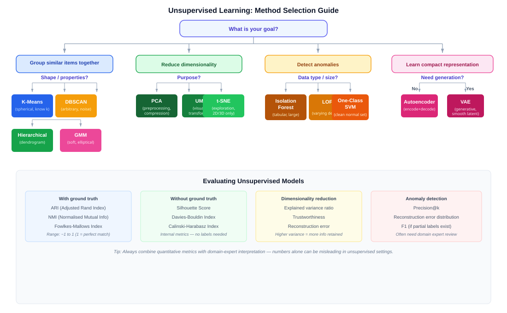
| Mistake | Fix |
|---|---|
| Running PCA on unscaled features | StandardScaler first, always |
| Interpreting t-SNE inter-cluster distances | Not meaningful — local structure only |
| Using k-means on non-spherical clusters | DBSCAN or GMM instead |
| Setting contamination=0.05 without thinking | Tune to match domain expectation of anomaly rate |
| Only using one cluster metric | Combine silhouette with domain sanity checks |
Common unsupervised learning questions in ML interviews.
A. K-Means assigns each point to exactly one cluster (hard assignment) and assumes clusters are spherical and equal in size. It minimizes within-cluster sum of squared distances. GMM is probabilistic — each cluster is a Gaussian distribution, and every point receives a soft membership probability across all clusters. GMM can model elliptical clusters and overlapping distributions. K-Means is faster (especially with k-means++ init); GMM is more flexible but has more parameters. For cluster count selection, K-Means uses the elbow/silhouette method; GMM uses BIC/AIC.
A. Two complementary methods:
A. Use DBSCAN when: (a) cluster shapes are non-spherical (rings, crescents, arbitrary), (b) you expect noise/outliers and want them explicitly flagged (label −1), (c) you don't know k in advance. DBSCAN requires tuning eps (neighbourhood radius) and min_samples. It struggles when clusters have very different densities. For datasets with widely varying densities, consider HDBSCAN (hierarchical DBSCAN) instead.
A. PCA finds the directions (principal components) of maximum variance in the data by computing the eigenvectors of the covariance matrix. Each eigenvector defines a new axis; the corresponding eigenvalue is the variance along that axis. Explained variance ratio = eigenvalue / sum of all eigenvalues. If PC1 has explained variance 0.38, it means projecting onto PC1 retains 38% of the total variance. Keeping enough components to explain 95% is a common heuristic. Always scale before PCA — features with larger magnitude dominate the covariance matrix.
A. Both are nonlinear dimensionality reduction methods for visualization:
| Property | t-SNE | UMAP |
|---|---|---|
| Speed | Slow (O(n log n)) | Much faster |
| Global structure | Not preserved | Better preserved |
| New data transform | Not supported | Supported (transform()) |
| Cluster distances | Not meaningful | More meaningful |
| Key parameter | perplexity (5–50) | n_neighbors, min_dist |
Neither should be used for feature engineering in production models — only for exploration and visualization.
A. Isolation Forest builds many random decision trees. At each node, it picks a random feature and a random split value. The path length to isolate a point measures how unusual it is: normal points blend in with the data and require many splits; anomalies stand apart and are isolated with just a few random cuts. The anomaly score = average normalized path length across all trees. Shorter path = higher anomaly score. Key hyperparameter: contamination (expected fraction of anomalies, used to set the decision threshold). It is fast (O(n log n)), scales well, and handles high-dimensional data better than LOF.
A. Three internal metrics:
Always supplement metrics with domain sanity checks: do the clusters make business sense? Are cluster profiles interpretable?
A. An autoencoder is a neural network trained to reconstruct its own input through a narrow bottleneck layer. The encoder compresses the input to a low-dimensional latent vector z; the decoder reconstructs the input from z. The bottleneck forces the model to learn only the most essential structure. Uses: (1) dimensionality reduction — use the latent vector as a compressed representation; (2) anomaly detection — anomalies have high reconstruction error; (3) denoising — train on noisy inputs with clean targets; (4) pretraining — use encoder weights to initialize a supervised model. VAE (Variational Autoencoder) adds a probabilistic bottleneck, enabling generation of new samples.
A. As dimensionality increases, distances between points become increasingly similar (concentration phenomenon). In high dimensions: (1) K-Means and LOF struggle because Euclidean distance loses discriminative power; (2) density estimates become unreliable (all regions appear sparse); (3) visualization is impossible. Mitigations: (a) apply PCA before clustering to reduce noise dimensions; (b) use cosine similarity instead of Euclidean for text/embeddings; (c) feature selection to remove irrelevant features; (d) use UMAP/t-SNE for visualization.
A.
contamination=0.01–0.05 based on domain expectation.